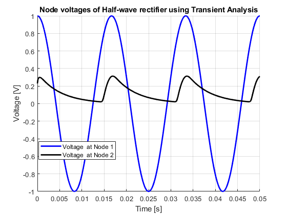

ECSE 472 Project
Deliverable 3
General description
The main objective of this deliverable is to perform the linear and nonlinear transient analysis using the Backward Euler Method.
The circuit netlist is provided below.
* a half-wave recitifier circuit
Vin n1 0 COS 1 60
* Vin is a cosine with a 1V amplitude and 60Hz frequency
D1 n1 n2
R1 n2 0 50
C1 n2 0 100e-6
.tran 0.05s 0.1ms
* run transient simulation for 0.05s with step size of
0.1ms
.end
For the diode you can assume saturation current, Is = 1e-14 A
and the thermal voltage, Vt = 0.025 V.
The result of
your simulation for nodes n1 and n2 is provided below.
